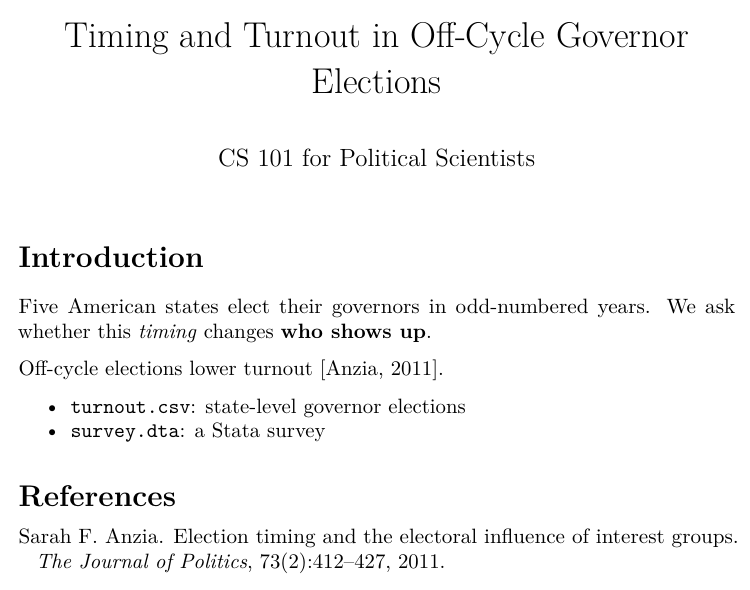
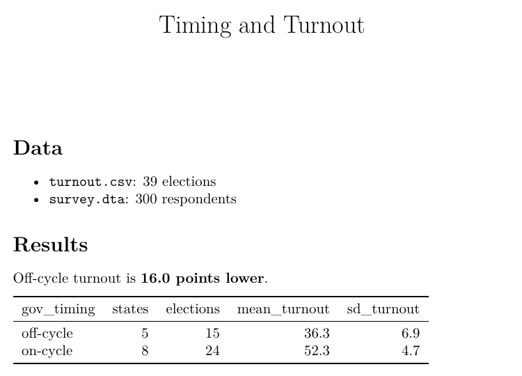

GW PSC Workshop · October 6, 2026
Alperen Keles
alperenkeles.com · alpkeles99@gmail.com
.qmd / .rmd into a PDF?| Base | Representation |
|---|---|
| 10 (decimal) | 1776 |
| 2 (binary) | 11011110000 |
| 8 (octal) | 3360 |
| 16 (hexadecimal) | 6F0 |
Agree on a table: every character gets a number.
| Character | Decimal | Hex | Binary |
|---|---|---|---|
V | 86 | 56 | 01010110 |
O | 79 | 4F | 01001111 |
T | 84 | 54 | 01010100 |
E | 69 | 45 | 01000101 |
| Character | Code point | UTF-8 bytes |
|---|---|---|
A | U+0041 | 41 |
ç | U+00E7 | C3 A7 |
ş | U+015F | C5 9F |
中 | U+4E2D | E4 B8 AD |
| 🗳️ | U+1F5F3 | F0 9F 97 B3 |
150,000+ characters, 1–4 bytes each. Plain ASCII text is already valid UTF-8.
CS 101 for Political Scientists
Five American states elect their governors in odd-numbered years. We ask whether this timing changes who shows up.
Off-cycle elections lower turnout (Anzia 2011).
turnout.csv: state-level governor electionssurvey.dta: a Stata survey
---
title: "Timing and Turnout in Off-Cycle Governor Elections"
author: "CS 101 for Political Scientists"
---
# Introduction
Five American states elect their governors in
odd-numbered years. We ask whether this *timing*
changes **who shows up**.
Off-cycle elections lower turnout [@anzia2011election].
- `turnout.csv`: state-level governor elections
- `survey.dta`: a Stata survey
\title{Timing and Turnout in Off-Cycle Governor Elections}
\author{CS 101 for Political Scientists}
\begin{document}
\maketitle
\section{Introduction}
Five American states elect their governors in
odd-numbered years. We ask whether this \emph{timing}
changes \textbf{who shows up}.
Off-cycle elections lower turnout \citep{anzia2011election}.
\begin{itemize}
\item \texttt{turnout.csv}: state-level governor elections
\item \texttt{survey.dta}: a Stata survey
\end{itemize}
Part 1
.qmd to PDF
turnout-paper/data/turnout.csv
"abbr","year","turnout_pct" "VA",2015,30.6 "VA",2019,38.8 "VA",2023,33 "NJ",2015,42.5 "NJ",2019,24.8 "NJ",2023,28.9 "KY",2015,39.6 "KY",2019,44.8 "KY",2023,41.6
turnout-paper/data/states.tsv
state abbr region gov_timing Virginia VA South off-cycle New Jersey NJ Northeast off-cycle Kentucky KY South off-cycle Louisiana LA South off-cycle Mississippi MS South off-cycle Ohio OH Midwest on-cycle Pennsylvania PA Northeast on-cycle Georgia GA South on-cycle
turnout-paper/notes.txt
TODO - ask advisor whether to add 2025 VA/NJ races - the turnout numbers in data/ are SIMULATED for teaching, swap in real data later - coauthor uses Stata -> analysis/models.do mirrors analysis/clean.R
turnout-paper/paper.rmd
--- title: "Timing and Turnout in Off-Cycle Governor Elections" author: "CS 101 for Political Scientists (demo paper)" date: "October 6, 2026" bibliography: references.bib biblio-style: plainnat header-includes: - \usepackage{booktabs} - \usepackage{multicol} output: pdf_document: citation_package: natbib --- ```{r setup, include=FALSE} knitr::opts_chunk$set(echo = FALSE, message = FALSE, warning = FALSE, dpi = 200) source("analysis/clean.R") ``` # Introduction Five American states elect their governors in odd-numbered years, away from federal elections. We ask whether this *timing* changes **who shows up to vote**. Political scientists have long argued that off-cycle elections lower turnout and hand more influence to organized groups [@anzia2011election; @anzia2014timing]. When citizens are unhappy with their government they can exit or they can use their voice [@hirschman1970exit], and voting is the most common form of voice.^[All data in this paper are simulated for teaching purposes.]
--- lines: title, author, output settings.```{r} fences; knitr runs them.the same paper written for Quarto (illustrative)
--- title: "Timing and Turnout in Off-Cycle Governor Elections" format: pdf bibliography: references.bib --- ```{r} #| label: setup #| include: false source("analysis/clean.R") ``` # Introduction Five American states elect their governors in odd-numbered years, away from federal elections. We ask whether this *timing* changes **who shows up to vote**.
format: pdf instead of output: pdf_document.turnout-paper/build/2-paper.tex (generated by pandoc)
% Options for packages loaded elsewhere \PassOptionsToPackage{unicode}{hyperref} \PassOptionsToPackage{hyphens}{url} % \documentclass[ ]{article} … \begin{document} \maketitle \hypertarget{introduction}{% \section{Introduction}\label{introduction}} Five American states elect their governors in odd-numbered years, away from federal elections. We ask whether this \emph{timing} changes \textbf{who shows up to vote}. Political scientists have long argued that off-cycle elections lower turnout and hand more influence to organized groups
\begin{document}): document class and packages.\section{…} and \emph{…}.\begin{x} … \end{x} environments nest, like boxes in boxes.turnout-paper/references.bib
@book{hirschman1970exit, title = {Exit, Voice, and Loyalty: Responses to Decline in Firms, Organizations, and States}, author = {Hirschman, Albert O.}, year = {1970}, publisher = {Harvard University Press}, address = {Cambridge, MA} } @book{anzia2014timing, title = {Timing and Turnout: How Off-Cycle Elections Favor Organized Groups}, author = {Anzia, Sarah F.}, year = {2014}, publisher = {University of Chicago Press}, address = {Chicago} }
[@hirschman1970exit] or \citep{hirschman1970exit}.turnout-paper/analysis/clean.R
# Reads the three datasets and builds the objects paper.rmd uses. # Paths are relative to the project folder (where paper.rmd lives). library(dplyr) states <- read.delim("data/states.tsv") # tab separated turnout <- read.csv("data/turnout.csv") # comma separated survey <- haven::read_dta("data/survey.dta") # Stata, binary elections <- turnout |> left_join(states, by = "abbr") |> mutate(off_cycle = gov_timing == "off-cycle") by_timing <- elections |> group_by(gov_timing) |> summarise(states = n_distinct(abbr),
turnout-paper/analysis/models.do
* The same comparison as analysis/clean.R, for a coauthor who uses Stata. * Run from the turnout-paper folder: do analysis/models.do import delimited "data/states.tsv", delimiter(tab) clear tempfile states save `states' import delimited "data/turnout.csv", clear merge m:1 abbr using `states', nogenerate generate off_cycle = gov_timing == "off-cycle" encode region, generate(region_code) tabstat turnout_pct, by(gov_timing) statistics(mean sd n) regress turnout_pct off_cycle i.region_code
clean.R, so a Stata-using coauthor can run it.turnout-paper/build/paper.html (generated by pandoc)
<body> <header id="title-block-header"> <h1 class="title">Timing and Turnout in Off-Cycle Governor Elections</h1> <p class="author">CS 101 for Political Scientists (demo paper)</p> <p class="date">October 6, 2026</p> </header> <h1 id="introduction">Introduction</h1> <p>Five American states elect their governors in odd-numbered years, away from federal elections. We ask whether this <em>timing</em> changes <strong>who shows up to vote</strong>.</p> <p>Political scientists have long argued that off-cycle elections lower turnout and hand more influence to organized groups <span class="citation" data-cites="anzia2011election anzia2014timing">(Anzia 2011, 2014)</span>. When citizens are unhappy with their government they can exit or they can use their voice <span class="citation"
<h1>…</h1>, <p>…</p>.turnout-paper/data/survey.dta
<stata_dta><header><release>118</release><byteorder>LSF</byteorder><K>��</K><N>,�������</N><label>��</label><timestamp>�03 Oct 2026 15:39</timestamp></header><map>������������������������D�����������������������/���������������C�������f��������#�������#������R%������^%������</map><variable_types>����������</variable_types><varnames>resp_id��������������������������������������������������������������������������������������������������������������������������abbr���������������������������������
00000000: 3c73 7461 7461 5f64 7461 3e3c 6865 6164 <stata_dta><head 00000010: 6572 3e3c 7265 6c65 6173 653e 3131 383c er><release>118< 00000020: 2f72 656c 6561 7365 3e3c 6279 7465 6f72 /release><byteor 00000030: 6465 723e 4c53 463c 2f62 7974 656f 7264 der>LSF</byteord 00000040: 6572 3e3c 4b3e 0500 3c2f 4b3e 3c4e 3e2c er><K>..</K><N>, 00000050: 0100 0000 0000 003c 2f4e 3e3c 6c61 6265 .......</N><labe 00000060: 6c3e 0000 3c2f 6c61 6265 6c3e 3c74 696d l>..</label><tim 00000070: 6573 7461 6d70 3e11 3033 204f 6374 2032 estamp>.03 Oct 2 00000080: 3032 3620 3135 3a33 393c 2f74 696d 6573 026 15:39</times 00000090: 7461 6d70 3e3c 2f68 6561 6465 723e 3c6d tamp></header><m
<stata_dta><header><release>118…haven or Python's pandas to read it.turnout-paper/build/3-paper.pdf
%PDF-1.5 %���� 13 0 obj << /Length 1609 /Filter /FlateDecode >> stream xڥWKs�6���W�H�D���sK�j;��Þ��Ɂ�`�S�tIʮ�����ɔ̤�v<c���b��.x��x������W�/�+���Iatvu��cXaLf�a����:�ί�n7���2��5-��E����ۏD�[����Wj��q��D��-����?��~����L�Ǭ��R V G�����Xw��X�Z�6V�#�jK'��6[*͜-�ěK������(�[ȏ�����v�X����.W�o�y��q �'n��7�����"�[,�����Q��J��KY2e,]��j�n�X��$��$CriI�[dB3�-�/�`��0�1��G9?��%�� �|���'�UV��J���8���'2��+�˴u���[�A���`�'%^7���!$�e���ò�>}p3�[_�D� L.'!!L�q�IF��]��у�&0�$O�5�>��U?$WT��aA+��(���
%PDF-1.5 %ÐÔÅØ 13 0 obj << /Length 1609 /Filter /FlateDecode >> stream [1,609 bytes of compressed page content] … endstream endobj startxref 278615 %%EOF
/FlateDecode).startxref points to an exact byte offset, so editing one character by hand breaks the file.turnout-paper/draft-from-advisor.docx
PK���������C]����o���%�������[Content_Types].xml�U�n�0����k�Nz��*$�.�6R��p�@��E����;@��*����$3��?f�l��e����5)�&����6S�H���%�g��lup�"j5!e�D��y���"$ց�Jn��HG_p'�(��N&w\Z�`0ƚ��gO�����yO�[Y������R&�+��He�T�I��2� �&�e/�����������Q⍒�*�h)<�
M||g}�w�~�DJ%$�nOh�<W�2++M��&t�J���t�� �vb*��O����Q�������N�i��}N/����k椰�����������I�b�PoR�YLF�xT��{'.��G��ݫ�����Z}�[�s��Y�C�cLz�;��1\�AW�B�a#��{�(���,�Ecq���Qw.x�ߛ��PK���������C]�w��������������_rels/.rels��MN�1�F��y���
B�i7�Rw���X�g&��Q�B�=�!���]t1829 [Content_Types].xml 722 _rels/.rels 2193 word/document.xml 1203 word/_rels/document.xml.rels 124 word/_rels/footnotes.xml.rels 4119 word/numbering.xml 20527 word/styles.xml 843 word/footnotes.xml 625 word/comments.xml … 7 more ── word/document.xml ── <w:body> <w:bookmarkStart w:id="20" w:name="comments-on-your-draft"/> <w:p> <w:pPr> <w:pStyle w:val="Heading1"/> </w:pPr> <w:r> <w:t xml:space="preserve">Comments on your draft</w:t> </w:r> </w:p> <w:p> <w:pPr> <w:pStyle w:val="FirstParagraph"/> …
.zip and unzip it: it's a folder of XML files.<w:t>, styling in <w:pPr>/<w:rPr>, scattered across many tags.turnout-paper/data/codebook.xlsx
PK���������|C]�\��������������[Content_Types].xml���N�0��_��Z�N; ��t(t�����sI��K>����I��*�0�����dW���v�Hڻ��E��:�[�������-�6��= �luT�!�p'%��-���]V:�-�|����F�Qn��F*���T���7�=vp4�=L����h����8�j�!�� e]�\��R\�"'���:�*���J������S~��[d���#�쒓�o>��ޏ���+[��� [��6G����Ҁ�������[��_�$����E��?���w7�PK���������|C]�I��������������_rels/.rels����� ���W!�;��c��.�dW3��Y���%�:�^��x������U�ؙ=0DCN��(��S����\����M]]p�)'�h|d�⢀1%��<�����yty3P�2�1h��F�+�=����M���B�o�u/���4�F��ݢK?N|%�,��$`����t#�����+�z�~�PK��
540 [Content_Types].xml 278 _rels/.rels 268 xl/workbook.xml 279 xl/_rels/workbook.xml.rels 1742 xl/worksheets/sheet1.xml ── xl/worksheets/sheet1.xml ── <sheetData> <row r="1"> <c r="A1" t="inlineStr"> <is> <t>file</t> </is> </c> <c r="B1" t="inlineStr"> <is> <t>variable</t> </is> </c> <c r="C1" t="inlineStr"> …
<c r="A1"> tag; formatting and formulas live alongside..csv when you want the data itself.turnout-paper/talk.pptx
PK���������C]2���������������ppt/slides/slide1.xml�T]��!��+�����M�fs���Ik���I�);��,�@]�}�vQ��Ĥ}���93����Ե��胲f������H[+���/�ww/����UA�@�&Tbʚ�]�y���"�[��|��[�i鷼��@�����9o�2l������FI|c�E�{��ZDj34ʅ��nAs�����_ZJ��Jי�[{�d��{�Vn�{�_zP5���������<C\�6���!l�)�n��4�=覌�>摧M�"�~W^l���hټ���K�~Q8��;��դ�Z������J��ͭ���X"�e�I�Bz�iv�ģ#����I�����I�ؽ��1��Ns�+*��*����ry ���LT���3����dd�����d����gk����ajXＱ���cN�}b��ŋx���Y��5��������k�0�WAU�]���-�5����ɣ������X��Q��W�ח#X|���o#���iuE�[K��1269 ppt/slides/slide1.xml 1220 ppt/slides/slide2.xml 293 ppt/slides/_rels/slide1.xml.rels 293 ppt/slides/_rels/slide2.xml.rels 12012 ppt/slideMasters/slideMaster1.xml 1984 ppt/slideMasters/_rels/slideMaster1.xml.rels 3465 [Content_Types].xml 583 docProps/core.xml 212 docProps/custom.xml … 31 more ── ppt/slides/slide1.xml ── <a:pPr lvl="0" indent="0" marL="0"> <a:buNone/> </a:pPr> <a:r> <a:rPr/> <a:t>Timing and Turnout</a:t> </a:r> </a:p> </p:txBody> </p:sp> <p:sp> <p:nvSpPr> <p:cNvPr id="3" name="Content Placeholder 2"/> <p:cNvSpPr> <a:spLocks noGrp="1"/> </p:cNvSpPr> …
---
title: "Timing and Turnout in Off-Cycle Governor Elections"
author: "CS 101 for Political Scientists"
---
# Introduction
Five American states elect their governors in
odd-numbered years. We ask whether this *timing*
changes **who shows up**.
Off-cycle elections lower turnout [@anzia2011election].
- `turnout.csv`: state-level governor elections
- `survey.dta`: a Stata survey
\title{Timing and Turnout in Off-Cycle
Governor Elections}
\author{CS 101 for Political Scientists}
\date{}
\begin{document}
\maketitle
\hypertarget{introduction}{%
\section{Introduction}\label{introduction}}
Five American states elect their governors
in odd-numbered years. We ask whether this
\emph{timing} changes \textbf{who shows up}.
Off-cycle elections lower turnout
\citep{anzia2011election}.
\begin{itemize}
\tightlist
\item
\texttt{turnout.csv}: state-level governor
elections
\item
\texttt{survey.dta}: a Stata survey
\end{itemize}
\bibliography{references.bib}
\end{document}

---
title: "Timing and Turnout"
output: pdf_document
---
```{r setup, include=FALSE}
source("analysis/clean.R")
```
# Data
- `turnout.csv`: `r nrow(turnout)` elections
- `survey.dta`: `r nrow(survey)` respondents
# Results
Off-cycle turnout is
**`r sprintf("%.1f", turnout_gap)` points lower**.
```{r turnout-table, echo=FALSE}
knitr::kable(by_timing, digits = 1,
format = "latex", booktabs = TRUE)
```
---
title: "Timing and Turnout"
output: pdf_document
---
# Data
- `turnout.csv`: 39 elections
- `survey.dta`: 300 respondents
# Results
Off-cycle turnout is
**16.0 points lower**.
\begin{tabular}{lrrrr}
\toprule
gov\_timing & states & elections & mean\_turnout & sd\_turnout\\
\midrule
off-cycle & 5 & 15 & 36.3 & 6.9\\
on-cycle & 8 & 24 & 52.3 & 4.7\\
\bottomrule
\end{tabular}
\title{Timing and Turnout}
\author{}
\date{}
\begin{document}
\maketitle
\hypertarget{data}{%
\section{Data}\label{data}}
\begin{itemize}
\tightlist
\item
\texttt{turnout.csv}: 39 elections
\item
\texttt{survey.dta}: 300 respondents
\end{itemize}
\hypertarget{results}{%
\section{Results}\label{results}}
Off-cycle turnout is \textbf{16.0 points
lower}.
\begin{tabular}{lrrrr}
\toprule
gov\_timing & states & elections & mean\_turnout & sd\_turnout\\
\midrule
off-cycle & 5 & 15 & 36.3 & 6.9\\
on-cycle & 8 & 24 & 52.3 & 4.7\\
\bottomrule
\end{tabular}
\end{document}

Part 2
PaperFinalFinalFinal3.docx
.git/ folder; the history will live there..gitignore (here build/, PDFs, caches) are never tracked: they can be regenerated.$ git init -b main
Initialized empty Git repository in ~/cs101-demo/alice/turnout-paper/.git/
origin).$ git clone https://github.com/alice/turnout-paper.git
Cloning into 'turnout-paper'...
done.
--global sets it for all your projects; without it, just this one.$ git config user.name "Bob" $ git config user.email "bob@example.com"
git status: it usually tells you the next command too.$ git status
On branch main
No commits yet
Untracked files:
(use "git add <file>..." to include in what will be committed)
.gitignore
analysis/
data/
draft-from-advisor.docx
notes.txt
paper.rmd
references.bib
render.sh
talk.pptx
nothing added to commit but untracked files present (use "git add" to track)
.csv data. For binary files it can only say Binary files differ.$ git diff diff --git a/paper.rmd b/paper.rmd index 34bcb22..b74e67c 100644 --- a/paper.rmd +++ b/paper.rmd @@ -1,5 +1,5 @@ --- -title: "Timing and Turnout in Off-Cycle Governor Elections" +title: "Timing and Turnout: Evidence from Off-Cycle Governor Elections" author: "CS 101 for Political Scientists (demo paper)" date: "October 6, 2026" bibliography: references.bib $ git diff diff --git a/data/turnout.csv b/data/turnout.csv index 774a184..ed24559 100644 --- a/data/turnout.csv +++ b/data/turnout.csv @@ -38,3 +38,5 @@ "NV",2014,52.8 "NV",2018,52.6 "NV",2022,56.5 +"VA",2025,41.2 +"NJ",2025,39.0
git add . stages everything; git add paper.rmd just one file.$ git add . $ git status On branch main No commits yet Changes to be committed: (use "git rm --cached <file>..." to unstage) new file: .gitignore new file: analysis/clean.R …
7c6b9b2; you can always go back to it.git commit -am "…" stages and commits changed files in one go.$ git commit -am "Sharpen the title"
[main 20367f1] Sharpen the title
1 file changed, 1 insertion(+), 1 deletion(-)
--graph draws where lines of work split and joined.$ git log --oneline --graph
* e3c2e8d Try numbered citations
* aee74f0 Merge branch 'main' of https://github.com/alice/turnout-paper
|\
| * cf06f89 Reword opening sentence
* | 06e7ad8 Use 'gubernatorial' in the opening
|/
* 120826e Merge branch 'main' of https://github.com/alice/turnout-paper
|\
| * 20367f1 Sharpen the title
* | cedb6fe Add 2025 races
|/
* 7c6b9b2 First draft of the turnout paper
$ echo "% scratch" >> notes.txt $ git restore notes.txt
git pull, then push again.git remote add origin <url> (or gh repo create).$ git push -u origin main To https://github.com/alice/turnout-paper.git * [new branch] main -> main branch 'main' set up to track 'origin/main'. $ git push To https://github.com/alice/turnout-paper.git ! [rejected] main -> main (fetch first) …
git add + git commit.$ git pull --no-edit From https://github.com/alice/turnout-paper 7c6b9b2..20367f1 main -> origin/main Merge made by the 'ort' strategy. paper.rmd | 2 +- 1 file changed, 1 insertion(+), 1 deletion(-) $ git pull --no-edit From https://github.com/alice/turnout-paper 120826e..cf06f89 main -> origin/main Auto-merging paper.rmd CONFLICT (content): Merge conflict in paper.rmd Automatic merge failed; fix conflicts and then commit the result. <<<<<<< HEAD Five U.S. states hold gubernatorial elections in odd-numbered years, away from federal election… ======= Five American states elect their governors in odd years, when no federal races are on the ballo… >>>>>>> cf06f89d65a296548c70c1e5f0325ae413cd94f3
git switch -c name starts a branch: an experiment that doesn't touch main.git switch main goes back; your folder changes to match.PaperFinalCopy2.docx.$ git switch -c numbered-citations Switched to a new branch 'numbered-citations' $ git switch main Switched to branch 'main' Your branch is up to date with 'origin/main'.
main hasn't moved, Git just moves it forward (fast-forward); otherwise it makes a merge commit.git pull is git fetch + git merge.$ git merge numbered-citations
Updating aee74f0..e3c2e8d
Fast-forward
paper.rmd | 1 +
1 file changed, 1 insertion(+)
Part 3
Pitfalls and leverage points
Questions?